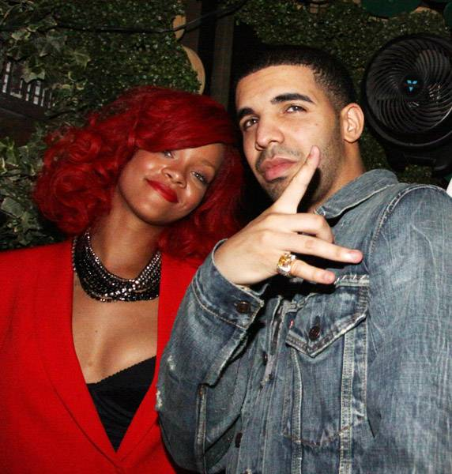

Wow time sure did fly by, I hope when your reading this you have lived a good life so far. I hope you have a great family and you have a great career hopefully a nurse.
Hopefully I did great in college Ive been looking forward to that since highschool. I'm guessing you are still in love with monkies and maybe even have one that was always
the animal that I wished I could have since I was a kid. I'm also thinking Justin Bieber is still a big deal. I wonder if people are still using twitter and facebook maybe
there is a new social network people are using. Stepbrothers is probably still my favorite movie its hard to believe they still make movies that funny that would be a hard movie to
top. Whatever I'm doing with my life or where ever im at I just hope I'm happy.
